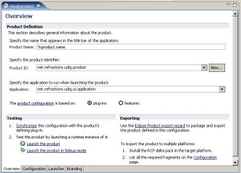
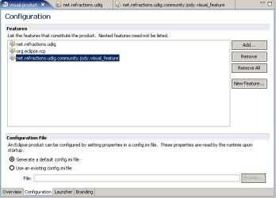
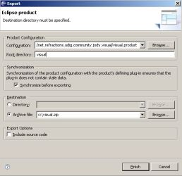

A product is a main entry point into your uDig (or Eclipse) based application. It is used within the Eclipse SDK to package your application for release, and to launch it from within Eclipse. The file is XML-based, but Eclipse provides a very nice GUI editor.
uDig's application lives in the net.refractions.udig plug-in:
http://svn.geotools.org/udig/trunk/plugins/net.refractions.udig/udig.product
To create a product for your application, you will need to create a product file and place it in your branding plug-in.
In your Eclipse SDK:
This screenshot shows a newly created visual.product file based on udig.product:

Note that product name is set to "%product.name". You should either create a plugin.properties file and provide a value, or change it to an appropriate product name (eg: "Visual Application"). For an example properties file, see http://svn.geotools.org/udig/trunk/plugins/net.refractions.udig/plugin.properties
You can base your product on plug-ins or features. Features are generally preferable as they enable the use of an update-site. This is what uDig uses. If you change it to features, you will have to add the two features uDig depends on, on the Configuration page. These two features are net.refractions.udig and org.eclipse.rcp. You should also add in your own feature for plug-ins you want to include (ex: net.refractions.udig.community.jody.visual_feature)
The following screenshot shows the Configuration page of a product based on features:

The Launcher and Branding pages can be used to configure the branding of your application. This includes items such as the launching executable's name and icon, and the splash screen that is shown during start-up.
You probably also want to give your product a launcher name. On the Launcher page, enter a value under Launcher name. (eg: "visual")
A product file can be used to run your application within Eclipse. On the Overview page, under Testing, there are a couple buttons. Synchronize creates (or updates) the Eclipse run-time configuration (What you see under Run->Run History), and Launch the Product or Launch the Product in Debug mode.
To use the product file to run your application:
The product file can be used to build an archive containing an executable release of your application. On the Overview page, click Eclipse product export wizard. The wizard will appear and you will be prompted to enter configuration details, such as root directory and destination location.
Change Root directory to something suitable for your application (eg: "visual"). Select Archive file and point it to a location where you want the zip file saved (eg: c:\visual.zip). Press Finish and then wait for it to build.
The following screenshot shows the Eclipse export wizard:

Note that if you wish to export for multiple platforms, you will need to install the Eclispe RCP Delta Pack.
(c) Copyright (c) 2004-2008 Refractions Research Inc. and others.{kind=link}
{kind=link}
{kind=link}